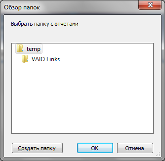

Tips_Macro_GetOpenFileFolder.xls (100,0 KiB, 1 235 скачиваний)
Tips_Macro_GetOpenFileFolder.xls (100,0 KiB, 1 235 скачиваний)Диалоговое окно выбора файлов/папки
Часто при работе с файлами и написании кодов начинающие "кодить" в VBA сталкиваются с необходимостью предоставить пользователю возможность самостоятельного выбора файлов: либо всех в указанной папке, либо каких-то отдельных. Конечно, можно жестко в коде написать нечто вроде: "C:\Documents\Files\Книга1.xls", но это требует не только наличия именно диска С, но и полной структуры папок и имен файлов. Это очень неудобно в большинстве случаев и куда чаще необходимо дать пользователю возможность самому указать имя файла. Записывать в ячейку листа полный путь и имя весьма непрактично и часто для неискушенного пользователя вызывает только "отторжение" от программы. В статье Просмотреть все файлы в папке я приводил пример кода, который просматривает все файлы в указанной папке и папка при этом выбирается сами пользователем из привычного по работе с Windows диалога. Там используется диалог выбора папок. Именно на этом я и хочу сделать акцент в этой статье - рассказать про некоторые способы вызова подобных диалогов для выбора файлов или папки. Так же обращу внимание на некоторые вещи, которые следует учитывать при использовании того или иного типа диалогов.
Если рассматривать наиболее простые варианты, то их два. Выбрать файлы можно через Applicaton.GetOpenFileName или через Application.FileDialog. Отличия в них есть, но я заострю внимание на главном: GetOpenFileName будет работать в любой версии Excel, а класс FileDialog только начиная с Excel 2002, т.к. именно в этой версии впервые был использован класс FileDialog. Это стоит учитывать при разработке.
Диалог выбора файлов Applicaton.GetOpenFileName
Параметры:
Application.GetOpenFilename([FileFilter], [FilterIndex], [Title], [ButtonText], [MultiSelect])
По сути я часто использую именно его, т.к. это универсальный метод и в нем есть все, что лично мне необходимо: выбрать определенные типы файлов позволяет, возможность запрета выбора нескольких файлов сразу есть.
Пример применения диалога Application.GetOpenFilename
Sub ShowGetOpenDialod() Dim avFiles 'по умолчанию к выбору доступны файлы Excel(xls,xlsx,xlsm,xlsb) avFiles = Application.GetOpenFilename _ ("Excel files(*.xls*),*.xls*", 1, "Выбрать Excel файлы", , False) If VarType(avFiles) = vbBoolean Then 'была нажата кнопка отмены - выход из процедуры Exit Sub End If 'avFiles - примет тип String MsgBox "Выбран файл: '" & avFiles & "'", vbInformation, "www.excel-vba.ru" End Sub
|
1 2 3 4 5 6 7 8 9 10 11 12 |
'по умолчанию к выбору доступны файлы Excel(xls,xlsx,xlsm,xlsb) avFiles = Application.GetOpenFilename _ ("Excel files(*.xls*),*.xls*", 1, "Выбрать Excel файлы", , False) If VarType(avFiles) = vbBoolean Then 'была нажата кнопка отмены - выход из процедуры MsgBox "Выбран файл: '" & avFiles & "'", vbInformation, "www.excel-vba.ru" |
В данном случае совершенно неважно указан ли выбор только одного файла или нескольких. Может поменяться только способ обработки полученного результата. Если параметр MultiSelect установлен в False, то переменная avFiles примет тип String, т.е. это будет одна строка. Предположим, что была выбрана книга Excel. Тогда открыть её можно будет как обычно это делается при использовании переменной:
|
1 |
Если же параметр MultiSelect установлен в True, то переменная avFiles примет тип Array - массив строк, в котором будут записаны все пути и имена выбранных файлов. Обрабатывать в таком случае следует циклом:
'avFiles - примет тип Array For Each x In avFiles Workbooks.Open x Next
|
1 2 3 4 |
В приложенном к статье файле приведены две процедуры с использованием этого типа диалога и обработкой файлов с параметром MultiSelect, установленным в True и False.
У этого диалога тоже есть параметры и они очень схожи с таковыми в Application.GetOpenFilename:
Ниже в статье примера кода с применением всех описанных параметров
|
AllowMultiSelect |
Указывает, может быть выбран только один файл или несколько:
| ||||
|
Title |
Текст заголовка диалогового окна. Если указать "Выбрать текстовые или Excel файлы", то именно этот текст будет в заголовке. Если не указывать, то будет текст по умолчанию(нечто вроде "Открытие документа") | ||||
|
Filters |
Перечисляются типы файлов, которые будут отображаться в диалоговом окне выбора. Для добавления типа файла(расширения) необходимо использовать метод Add:
Тип файлов, который будет показан по умолчанию при вызове диалога определяется свойством FilterIndex диалога FileDialog. Каждый новый тип файлов добавляется новым Add: .Filters.Add "Excel files", "*.xls*;*.xla*", 1 'добавляем возможность выбора файлов Excel .Filters.Add "Text files", "*.txt", 2 'добавляем возможность выбора текстовых файлов
| ||||
|
FilterIndex |
Назначает тип файлов, который будет выбран по умолчанию из всех перечисленных в коллекции Filters при вызове диалога | ||||
|
InitialFileName |
Этим параметром можно задать начальную папку, на которой будет открыт диалог:
Если при этом еще добавить имя файла, то в поле диалога Имя файла будет так же отображено это имя: .InitialFileName = "С:\Temp\Книга1.xlsx"
Я лично не рекомендую указывать имя файла, т.к. после показа диалога этот файл автоматически будет выбран, что не всегда бывает правильным. Но все зависит от задач. Если пользователь не выберет самостоятельно ни одного файла, то ответом диалога будет именно файл с указанным именем(Книга1.xlsx). Если такого файла не окажется в папке, то диалог выдаст предупреждение, что такого файла нет. | ||||
|
InitialView |
Данный параметр определяет внешний вид и структуру окна диалога. Доступно 9 вариантов:
При использовании данного параметра следует учитывать, что на разных операционных системах могут быть доступны не все варианты. Поэтому прежде чем использовать лучше убедиться, что на конечных ПК поддерживается указанный тип. В принципе ничего страшного не произойдет - будет просто показано окно с видом по умолчанию. Но куда правильнее в разработке придерживаться однотипного вида на всех ПК. | ||||
|
SelectedItems |
Возвращает коллекцию выбранных файлов. В отличии от Application.GetOpenFilename всегда возвращается массив строк, поэтому можно всегда использовать цикл для открытия файлов, даже если параметр AllowMultiSelect установлен в False: For Each x In .SelectedItems Workbooks.Open x Next
Так же можно отбирать только отдельные файлы по индексам или организовать цикл иначе: For lf = 1 to .SelectedItems.Count x = .SelectedItems(lf) Workbooks.Open x Next
Нумерация строк в SelectedItems всегда начинается с 1 | ||||
|
Show |
Пожалуй, самый важный метод в диалоге - отвечает за показ диалога. При этом метод Show возвращает ответ в виде целого числа:
Это можно(точнее нужно!) использовать, чтобы не продолжать выполнение кода, если нажата кнопка Отмены: If .Show = 0 Then Exit Sub 'была нажата кнопка отмены
|
Пример вызова диалога выбора файлов:
Sub ShowFileDialog() Dim oFD As FileDialog Dim x, lf As Long 'назначаем переменной ссылку на экземпляр диалога Set oFD = Application.FileDialog(msoFileDialogFilePicker) With oFD 'используем короткое обращение к объекту 'так же можно без oFD 'With Application.FileDialog(msoFileDialogFilePicker) .AllowMultiSelect = False .Title = "Выбрать файлы отчетов" 'заголовок окна диалога .Filters.Clear 'очищаем установленные ранее типы файлов .Filters.Add "Excel files", "*.xls*;*.xla*", 1 'устанавливаем возможность выбора только файлов Excel .Filters.Add "Text files", "*.txt", 2 'добавляем возможность выбора текстовых файлов .FilterIndex = 2 'устанавливаем тип файлов по умолчанию - Text files(Текстовые файлы) .InitialFileName = "С:\Temp\Книга1.xlsx" 'назначаем папку отображения и имя файла по умолчанию .InitialView = msoFileDialogViewDetails 'вид диалогового окна(доступно 9 вариантов) If oFD.Show = 0 Then Exit Sub 'показывает диалог 'цикл по коллекции выбранных в диалоге файлов For lf = 1 To .SelectedItems.Count x = .SelectedItems(lf) 'считываем полный путь к файлу Workbooks.Open x 'открытие книги 'можно также без х 'Workbooks.Open .SelectedItems(lf) Next End With End Sub
|
1 2 3 4 5 6 7 8 9 10 11 12 13 14 15 16 17 18 19 20 21 22 23 24 25 26 |
'назначаем переменной ссылку на экземпляр диалога Set oFD = Application.FileDialog(msoFileDialogFilePicker) With oFD 'используем короткое обращение к объекту 'With Application.FileDialog(msoFileDialogFilePicker) .Title = "Выбрать файлы отчетов" 'заголовок окна диалога .Filters.Clear 'очищаем установленные ранее типы файлов .Filters.Add "Excel files", "*.xls*;*.xla*", 1 'устанавливаем возможность выбора только файлов Excel .Filters.Add "Text files", "*.txt", 2 'добавляем возможность выбора текстовых файлов .FilterIndex = 2 'устанавливаем тип файлов по умолчанию - Text files(Текстовые файлы) .InitialFileName = "С:\Temp\Книга1.xlsx" 'назначаем папку отображения и имя файла по умолчанию .InitialView = msoFileDialogViewDetails 'вид диалогового окна(доступно 9 вариантов) If oFD.Show = 0 Then Exit Sub 'показывает диалог 'цикл по коллекции выбранных в диалоге файлов For lf = 1 To .SelectedItems.Count x = .SelectedItems(lf) 'считываем полный путь к файлу Workbooks.Open x 'открытие книги |
|
Title |
Текст заголовка диалогового окна. Если указать "Выбрать папку с отчетами", то именно этот текст будет в заголовке. Если не указывать, то будет текст по умолчанию(нечто вроде "Открыть папку") | ||
|
InitialFileName |
Этим параметром можно задать начальную папку, на которой будет открыт диалог:
| ||
|
InitialView |
Данный параметр определяет внешний вид и структуру окна диалога. Доступно 9 вариантов:
При использовании данного параметра следует учитывать, что на разных операционных системах могут быть доступны не все варианты. Поэтому прежде чем использовать лучше убедиться, что на конечных ПК поддерживается указанный тип. В принципе ничего страшного не произойдет - будет просто показано окно с видом по умолчанию. Но куда правильнее в разработке придерживаться однотипного вида на всех ПК. | ||
|
SelectedItems |
Возвращает коллекцию с одним элементом, в котором содержится путь к выбранной папке. Нумерация строк в SelectedItems всегда начинается с 1, но т.к. выбор нескольких папок невозможен, то всегда указывается 1: x = .SelectedItems(1) | ||
|
ButtonName |
Назначает текст кнопки, которой подтверждается выбор папки. Может содержать не более 51 знака(чего как правило достаточно). | ||
|
Show |
Метод, который вызывает показ диалога с выбранными параметрами. Возвращает ответ в виде целого числа:
Это можно(точнее нужно!) использовать, чтобы не продолжать выполнение кода, если нажата кнопка Отмены: If .Show = 0 Then Exit Sub 'была нажата кнопка отмены
|
Пример вызова диалога выбора папки:
Sub ShowFolderDialog() Dim oFD As FileDialog Dim x, lf As Long 'назначаем переменной ссылку на экземпляр диалога Set oFD = Application.FileDialog(msoFileDialogFolderPicker) With oFD 'используем короткое обращение к объекту 'так же можно без oFD 'With Application.FileDialog(msoFileDialogFolderPicker) .Title = "Выбрать папку с отчетами" '"заголовок окна диалога .ButtonName = "Выбрать папку" .Filters.Clear 'очищаем установленные ранее типы файлов .InitialFileName = "C:\Temp\" '"назначаем первую папку отображения .InitialView = msoFileDialogViewLargeIcons 'вид диалогового окна(доступно 9 вариантов) If oFD.Show = 0 Then Exit Sub 'показывает диалог 'цикл по коллекции выбранных в диалоге файлов x = .SelectedItems(1) 'считываем путь к папке MsgBox "Выбрана папка: '" & x & "'", vbInformation, "www.excel-vba.ru" End With End Sub
|
1 2 3 4 5 6 7 8 9 10 11 12 13 14 15 16 17 18 19 |
'назначаем переменной ссылку на экземпляр диалога Set oFD = Application.FileDialog(msoFileDialogFolderPicker) With oFD 'используем короткое обращение к объекту 'With Application.FileDialog(msoFileDialogFolderPicker) .Title = "Выбрать папку с отчетами" '"заголовок окна диалога .Filters.Clear 'очищаем установленные ранее типы файлов .InitialFileName = "C:\Temp\" '"назначаем первую папку отображения .InitialView = msoFileDialogViewLargeIcons 'вид диалогового окна(доступно 9 вариантов) If oFD.Show = 0 Then Exit Sub 'показывает диалог 'цикл по коллекции выбранных в диалоге файлов x = .SelectedItems(1) 'считываем путь к папке MsgBox "Выбрана папка: '" & x & "'", vbInformation, "www.excel-vba.ru" |
|
Hwnd |
Дескриптор окна, к которому будет относится диалог. Как правило указывается 0 |
|
sTitle |
Поясняющий текст, который будет отображен в диалоге. Подобие заголовка окна. Может быть любым текстом, например "Выбрать папку с отчетами" |
|
iOptions |
Дополнительные параметры для диалога. Рекомендуется использовать 0. Но можно попробовать и пару других вариантов. Например, если указать 20, то в диалоговом окне появится дополнительное текстовое поле, в котором будет отображено имя выбранной папки. |
|
vRootFolder |
Аналогично InitialFileName в рассмотренных выше диалогах. Задает начальную папку, на которой диалог будет открыт после запуска. |

Пример вызова диалога выбора папки через Shell:
Sub GetFolderDialog_Shell() On Error Resume Next Dim objShellApp As Object, objFolder As Object, ulFlags Dim x As String Set objShellApp = CreateObject("Shell.Application") 'ulFlags = 0 - наиболее часто применяемый. Лучше использовать всегда именно 0 'ulFlags = 2 - так же можно выбрать файлы 'ulFlags = 20 - добавляется тестовое поле с отображением имени выбранной папки ulFlags = 0 Set objFolder = objShellApp.BrowseForFolder(0, "Выбрать папку с отчетами", ulFlags, "C:\Temp\")'" x = objFolder.Self.Path 'записываем в переменную путь к папке If Err.Number <> 0 Then MsgBox "Папка не выбрана!", vbInformation, "www.excel-vba.ru" Else MsgBox "Выбрана папка: '" & x & "'", vbInformation, "www.excel-vba.ru" End If End Sub
|
1 2 3 4 5 6 7 8 9 10 11 12 13 14 15 16 17 |
Dim objShellApp As Object, objFolder As Object, ulFlags Set objShellApp = CreateObject("Shell.Application") 'ulFlags = 0 - наиболее часто применяемый. Лучше использовать всегда именно 0 'ulFlags = 2 - так же можно выбрать файлы 'ulFlags = 20 - добавляется тестовое поле с отображением имени выбранной папки Set objFolder = objShellApp.BrowseForFolder(0, "Выбрать папку с отчетами", ulFlags, "C:\Temp\")'" x = objFolder.Self.Path 'записываем в переменную путь к папке MsgBox "Папка не выбрана!", vbInformation, "www.excel-vba.ru" MsgBox "Выбрана папка: '" & x & "'", vbInformation, "www.excel-vba.ru" |
Конечно, диалог подобный выглядит довольно убого, особенно на современных операционных системах. Но он работает в любых версиях офиса. Порой это бывает полезней красоты.
Скачать пример:
Tips_Macro_GetOpenFileFolder.xls (100,0 KiB, 1 235 скачиваний)